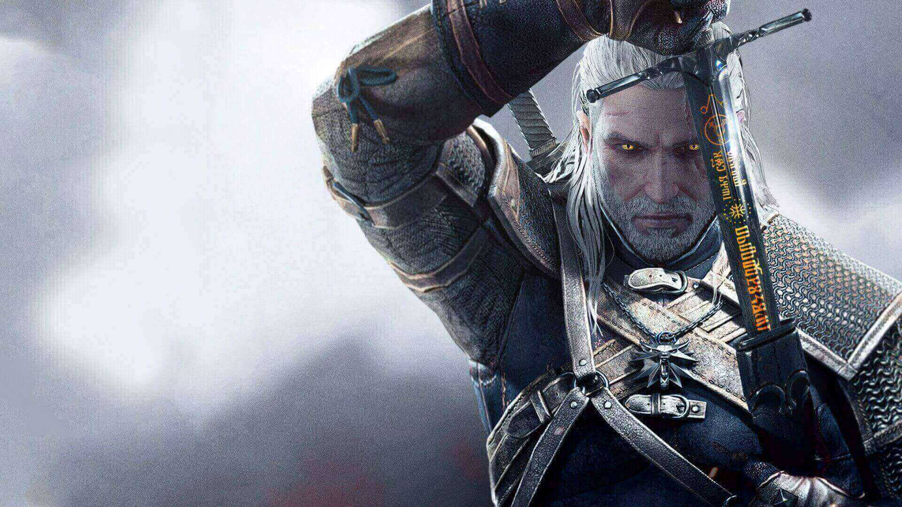
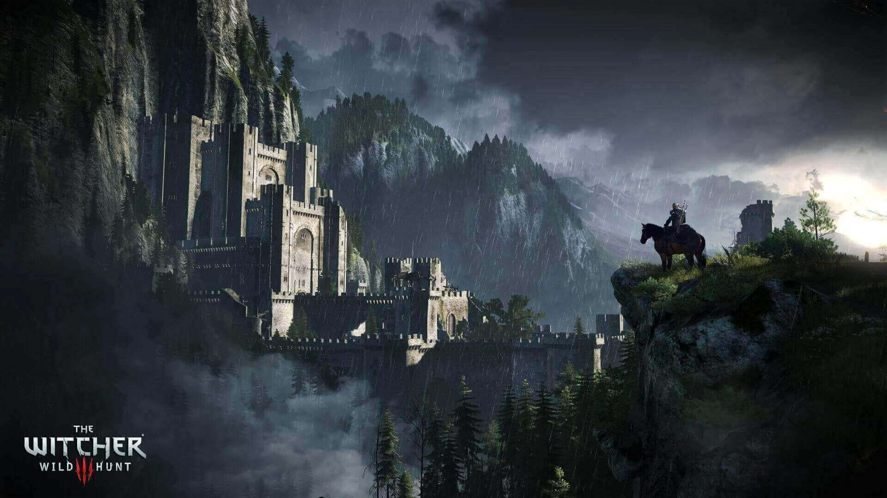
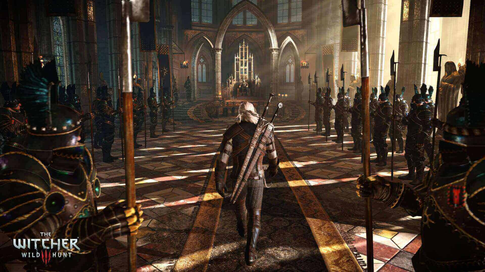

Het verhaal van Geralt ***Spoilers***
Geralt gaat terug naar zijn lang verloren geliefde, Yennefer, in de stad White Orchard. Yennefer vertelt hem dat keizer Emhyr hem naar de stad Vizima heeft geroepen. Emhyr daagt Geralt uit met het vinden van Ciri, die onlangs op verschillende plaatsen is gezien. Ciri is een Kind van het Oudere Bloed, de laatste erfgenaam van een oude elfenbloedlijn met de kracht om ruimte en tijd te manipuleren. Geralt hoort voor het eerst dat Ciri in Velen was bij Crow's Perch, het fort van de Bloody Baron. De baron weigert te helpen, maar Geralt's kennismaking, de tovenares Keira Metz, vertelt hem dat een Elvis Magiër op zoek was naar Ciri. Keira dirigeert Geralt naar de Crones of Crookback Bog: kwaadaardige, oude geesten wonen in de buurt van Velen. De Crones zeggen dat ze Ciri for the Wild Hunt hebben gevangen voordat ze ontsnapte en Anna, de vermiste vrouw van de baron, tot slaaf had gemaakt. Geralt keert terug naar de baron, die hem vertelt dat Ciri naar Novigrad is gegaan.
Hij ontdekt dat de Kerk van het Eeuwige Vuur, een militante religieuze organisatie, magiërs in Novigrad zuivert. Geralt ontmoet zijn vroegere geliefde, Triss Merigold, en leert dat Ciri contact had opgenomen met zijn vriend Dandelion. Geralt navigeert de criminele onderwereld van Novigrad om Dandelion te redden en leert dat Ciri teleporteerde naar de Skellige-archipel. In Novigrad kan Geralt Triss helpen om vluchtige magiërs te bevrijden. Hij vaart naar Skellige en komt terug bij Yennefer, die een magische explosie heeft onderzocht die verband houdt met Ciri. Ze volgen Ciri naar het eiland Lofoten, dat is aangevallen door de wilde jacht. Geralt en Yennefer beseffen dat Uma, een misvormd, vervloekt wezen bij Crow's Perch, aanwezig was na de ontsnapping van Ciri. Voordat hij Skellige verlaat, kan Geralt bepalen wie Skellige zal regeren na de dood van de koning. Yennefer verbreekt de magische band tussen haar en Geralt en geeft hem de mogelijkheid om zijn liefde voor haar te bevestigen of hun relatie te beëindigen.
Ze brengen Uma naar de heksenschool van Kaer Morhen, waar Yennefer zijn vloek opheft en hem verandert in Avallac'h. Hij onthult dat hij Ciri naar het eiland Mists teleporteerde om haar te redden van de Lofoten-aanval. Geralt reist naar het eiland en vindt Ciri in een dodelijke staat, totdat ze wordt gewekt door de magie van Avallac. Ze zegt dat de thuiswereld van Eredin (de koning van de wilde jacht) wordt vernietigd door de White Frost en hij wil dat Ciri's macht het continent verovert. Ciri en Geralt teleporteren naar Kaer Morhen, achtervolgd door de wilde jacht. Na een korte reünie met Yennefer, Triss en Vesemir (hun heksmentor) valt de jacht aan. Vesemir wordt gedood om Ciri te beschermen; haar benauwdheid ontketent haar Oudere macht, en Eredin en de jacht trekken zich terug. Geralt, Yennefer, Triss, Ciri en hun bondgenoten houden een begrafenis voor Vesemir. Ciri en Geralt reizen naar Novigrad en helpen Triss en Yennefer de Lodge of Sorceresses te hervormen om hun strijd te ondersteunen.
Ze leren over de Zonnesteen, een relikwie die Eredin kan lokken en hem kan binden aan een locatie. Op het Skelligan-eiland Undvik gebruikt Avallac'h de Sunstone om de jacht en hun vloot tevoorschijn te halen. Geralt, Ciri, hun bondgenoten en de Nilfgaard-vloot vechten de jacht en Geralt verslaat Eredin in de strijd. Terwijl de Witte Vorst afstamt van Skellige, benadrukt Ciri dat ze het moet confronteren met haar Ouderbloed voordat het al het leven op elke wereld verteert. Ze gaat een portaal binnen en verslaat de White Frost, waardoor de dreiging wordt beëindigd. Het einde van de game varieert, afhankelijk van eerdere keuzes. Als Ciri in leven is, kan Geralt met Yennefer of Triss stoppen of een eenzame witcher blijven. Als Geralt Nilfgaard helpt de oorlog te winnen en Ciri ertoe brengt de keizer te ontmoeten, zal ze keizerin worden; als Ciri de keizer niet ontmoet, vervalst Geralt haar dood en wordt zij een witcher. Als Ciri sterft vechten met de White Frost, jaagt Geralt haar gestolen medaillon neer als een aandenken; omringd door monsters wanneer hij het vindt, is zijn lot onbekend.